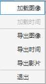
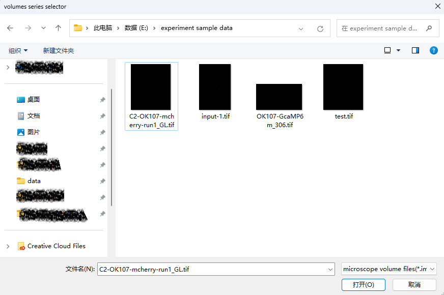
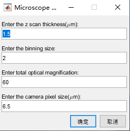
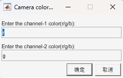

1.1.1 加载图像

单击文件，选择加载图像，在对话框中选择数据文件，单击打开。目前支持文件格式为ims文件、tif文件、nd2文件、hdf5文件(@silab)。

如果打开的数据文件中不包含基本信息中的一个或多个，将弹出如下所示要求补充基本信息的对话框。基本信息包括：Z 方向采样间隔、Binning尺寸、
显微镜综合放大倍数、相机像素物理尺寸。

注：如果打开文件为tif格式，此类型文件可能丢失颜色通道。此时将弹出颜色通道信息对话框，如下所示

选择正确的通道颜色标记，从r/g/b中选择